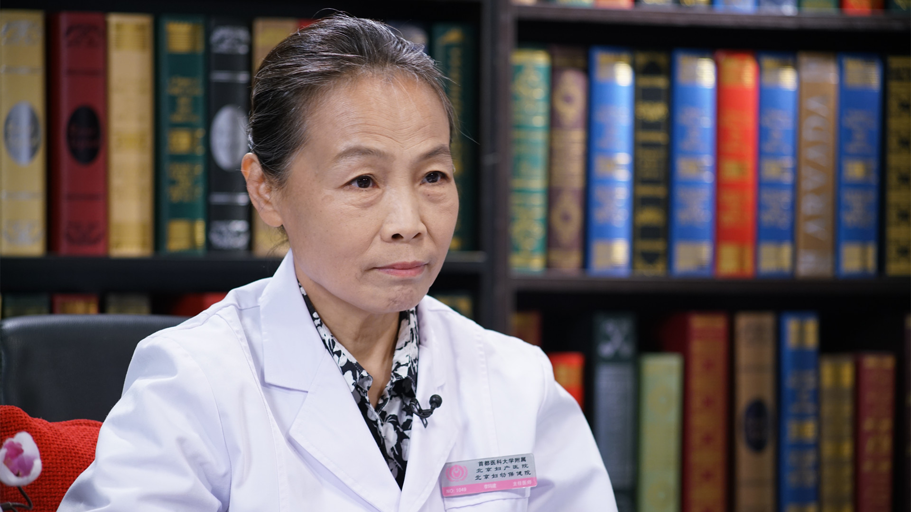

1.105 月经量少¶
李玛建 主任医师¶

首都医科大学附属北京妇产医院中医科 历任科主任 主任医师；
中华中医药学会妇科分会委员；曾任北京中医药学会妇科专业委员会委员；曾任第四批北京市级老中医药专家学术经验指导老师；“双百工程”指导老师。
主要成就： 在北京妇产医院从事中医妇科工作四十年，曾获北京市中医管理局科技成果二等奖。
专业特长： 擅长中医、中西医结合诊治女性不孕症、免疫性复发性自然流产、卵巢功能失调性子宫出血、盆腔炎、多囊卵巢综合征，人工助孕前后中医调理、卵巢功能失调性子宫出血、月经不调、更年期综合征等。
正常月经是怎样的？月经量少是病吗？¶
（采访）月经量少到底是怎么回事？
这个话题其实我一直想跟大家一起讨论一下，现在临床因为月经量少来就诊的病人真的不少，所以大家可能对这个问题认识不太清楚，总觉得它是一个病，或者觉得对自己健康会造成危害，所以就会带着这样的一些疑问来找医生。
首先就是我们要知道这个月经是怎么形成的。一个正常健康的女性，在一个生育年龄阶段，应该是每个月都有一个能够受孕的卵细胞从卵巢排出来，那么这个卵细胞在生长发育过程当中，它会产生雌激素，孕激素来刺激我们的子宫内膜，让我们子宫为受孕卵做充分的准备。
当这个排出的卵细胞没有能够受孕的话，那么这个子宫内膜就要相应地产生萎缩、坏死和脱落的过程，在子宫内膜脱落的时候，就出现子宫出血了，这个子宫出血就是我们的月经。
所以月经是在生育年龄出现的一个正常的生理现象，我们要知道这个月经周期其实就代表一个排卵周期或者叫性周期，我们女性和男性是不一样的，女性是有性周期的，所以月经实际上就是我们的一个性周期。
一般我们说月经应该是28天为一个周期，也就是说前一次月经的第一天，到下一次月经的第一天，应该是28天，我们如果提前7天或者后错7天，也是在一个正常的范围内。
出血时间应该是说基本在2天到7天的这样的一个出血阶段，就叫经期。
我们出血量，教科书上描述的是20毫升到60毫升的血液。
我们月经的主要成分就是血液了，还包括一些脱落的子宫内膜，还有一些少量的粘液，和生殖道排出的少量的细胞。
我们一个正常月经周期的形成和一个正常月经的表现形式就是这样的。
所以我们应该简单地说，就是我们月经量少它不是一个疾病，只是一个生理现象，如果我们身体健康，没有什么疾病，月经量少不会构成一个健康的危险因素。有些人觉得月经就是排毒，量少就是排毒排的少，所以我觉得这样的困惑应该是没有必要的。
如何判断月经量少？¶
（采访）正常的月经量就是20毫升左右，我们怎么样来界定量少？
对月经量少的判断，我们教科书上已经有一个描述，就说我们一次月经的失血量一般在20-60毫升，如果我们少于20毫升，就可以判断月经量少，那么20毫升的话怎么来评估？
我们一般会简单的评估，就说我们普通的矿泉水瓶子的盖，这个盖的话大概就是5毫升，我们少于4个瓶盖的量，我们就会考虑说这个就是月经量少。
那么这个月经量少的话，你要让病人自己去说，她很难去评估说我流出的量怎么去量，这个就不太好描述，所以我们经常会问病人，到底自己觉得量少是一个什么样的状态，病人有的时候会说，大夫我根本不用卫生巾，我就用护垫，或者说我这一天就用一张卫生巾，或者说根本看不见鲜血，就是有点血块出来，这些描述都可以作为临床上的参考。
引起月经量少的原因有哪些？¶
（采访）引起月经量少的原因有哪些呢？
月经量少形成的原因比较多，我们女性有一个正常的排卵周期，这个排卵周期是我们卵巢在进行排卵过程当中的一个活动。如果我们卵巢功能不正常，比方说我们卵细胞发育的不好，分泌的雌激素，孕激素不够，或者说影响我们月经正常的这样一个规律，就会因为雌激素低，内膜生长的不好，或者我们在正常周期的时候，有少量不规则出血，也会影响我们的月经量，所以我们第一个因素应该考虑卵巢功能是不是正常，如果卵巢功能不正常会引起月经量少。
再一个就是子宫本身的原因，比方说我们子宫发育的是不是正常，有的人可能子宫发育的就相对的小，或者说子宫发育有些畸形，像单角子宫，或者有些子宫会有些纵隔，这样的发育不正常，发育不正常的话，相对的子宫内膜它可能在脱落的时候，脱落得也会相对的少一些，这也是造成月经量少的一个因素。
再有就是我们比方说在后天宫腔的一些操作，比方人工流产手术，或者诊断性刮宫手术，那么现在临床可能见得更多的像子宫内膜息肉去除手术，尤其是比较多的那种子宫内膜息肉形成，在做手术的时候，可能这个手术的操作会对内膜有一定的影响或者是创伤，那宫腔操作过多了，内膜会有一些创伤，严重的还可以引起宫腔的粘连，所以像粘连带的形成也会影响我们子宫内膜的面积，所以在来月经的时候，它脱落的量就少，那么月经也就会比较少。
还有一些就是药物的原因，比方说我们有些药物，常用的一些促排卵药，或者说常用的避孕药，还有一些化疗药物，那么也会对子宫内膜造成一些影响，当把避孕药停掉以后，抑制作用解除了，一般我们应该说绝大多数人都应该能恢复，基本上没有不恢复的。
再有就是感染因素，比方说反复的盆腔炎，子宫内膜炎，那么当炎症好了，也会使我们的子宫内膜造成一些炎症以后的瘢痕，最典型的就是结核性子宫内膜炎，当结核控制了，那么最后形成的瘢痕，现在来看就是没有办法修复的，所以破坏掉的那些内膜形成的瘢痕，那个上面就没有子宫内膜覆盖，所以这些瘢痕的地方，就没有月经期内膜脱落出血的这样的一些现象，有的人甚至能造成闭经，这个就是炎症造成的后果。
还有一些原因，我们认为可能比方说紧张的情绪，工作压力大，紧张、焦虑或者休息不好，甚至有的病人会跟我们说，我本来月经正常，结果家里有些什么问题，突然的一个刺激，从那以后每次来月经量都少了，这样的一个诱因也是有的。
还有就说大家会有一些常识，就是有一些女同胞，正好在来月经的时候突然淋雨，或者说涉水，这个水特别凉，然后我涉水过去，突然月经就没有了，所以寒冷的刺激会引起我们盆腔血液循环不好，所以也会造成月经少。
那么有一些女同胞会明白，我来月经不太痛快的时候，我会用一些暖宝宝捂一捂小腹，就是放到后背，腰骶部，暖和以后，月经来的就挺好的，所以这个是因为血液循环的原因造成我们月经量比较少的。
所以总的月经量少里面，我们大概可以分两种，一个是功能性的，一个是器质性的，功能性的就相当于卵巢功能的问题，或者是精神紧张的问题，或者说一个冷的刺激，像这些应该说在治疗过程当中，是比较容易解决的。如果真的是创伤的话这种，或者本身发育就不好的，当然有一部分可以纠正，有一部分就不太容易纠正。
（采访）所以引起月经量少的原因还是非常多的，有功能性的和器质性的，对于器质性的来说，可能是先天的一些因素，但是功能性就是后天的一些影响因素会造成。
月经量少是比月经量多好吗？¶
（采访）有人说就是月经量少比月经量多了好，是这样的吗？
那么理论上讲应该是这样子的，但是我是想应该有一个起点，就是说我们月经量少，有没有影响我们的生育功能，因为月经量的形成和月经的形成，是卵巢功能一系列变化的结果。
所以如果在没有影响到生育功能的情况下，月经量少当然比月经量多好，月经量过多，实际上丢失的就是更多的血液，我们说月经的主要成分就是血液，所以丢失的少当然比丢失的多好，是这样子的。
（采访）也是分情况而看，如果是不影响我们的生育功能的话，这个月经量少比月经量多要好。
对，是这样的。
月经量少会导致不孕吗？¶
（采访）月经量少它会导致不孕吗？
这个问题应该这么说，不是月经量少导致的不孕，而是导致我们月经量少的病因影响怀孕，如果说因为卵巢功能排卵障碍，或者说我们子宫内膜的创伤，是因为这些因素导致我们月经量少，那么会对怀孕有影响，因为卵巢不能正常排卵，我们怀孕就没有物质基础了。
如果能排卵，但是子宫内膜又过于薄，我们的子宫内环境不好，月经量少肯定会引起不孕，除了出现不孕的情况，还可能会引起我们早期的自然流产。
所以不是因为月经量少而导致不孕，而是引起月经量少的那些原因是什么，如果那些原因是影响我们生育功能的，那这个月经量少是会出现不孕或者反复流产，单纯的月经量少是不会的。
中医所说的“血虚”导致的月经量少有哪些症状？该怎么办？¶
（采访）血虚导致的月经量少有哪些症状？
这个实际上是从我们中医的角度来看这个问题，西医它不会辨证这样的一个方法。
血虚的话是我们中医辨证论治的一种专门的证型，那么这个证型应该主要表现在，比方说平时有头晕、眼花、容易失眠，如果让我们整个去评估这个人的面色会有些苍白或者萎黄，我们中医要望闻问切的，那么望诊还可以看看她的舌头，舌质比较淡。
那么在月经的这个表现上来看，就是月经血比较稀，然后颜色比较淡，这个人来叙述病例的时候，可能会表现得没有精神、语音比较低、打不起精神这种感觉，所以这样我们会判断她是属于血虚的这样的月经量少。
那么像血虚的话，我们在治疗的时候就要采取补血养血的方式来帮她调理月经。
（采访）我们是怎样补血养血？
那么一般我们在临床上，中医常用的都是四物汤，就是当归、熟地、川芎、白芍，用四物汤来养血，有的时候我们还会配合一些补气的药，像党参、黄芪、黄精这样的一些药物来帮她恢复血虚的状态。
中医所说的“肾虚”导致的月经量少有哪些症状？该怎么办？¶
（采访）肾虚导致的月经量少有哪些症状？
那么肾虚导致的月经量少，一般我们说都会伴有肾虚的一些症状，一个就是说平时会有些腰酸腿疼，或者尿频，或者足跟疼，或者夜尿会次数稍微多一点，然后平时的话，白带也会有一些清稀的状态，再有就是也有些人会反应说有耳鸣这样的一些症状。
那么如果在来月经的时候，经血不像血虚那么淡，血量少，但是颜色偏暗，总的血量是不多的，颜色会偏暗，但是它不是淡的。
我们从舌苔，脉象看的话，这个人会表现的舌质稍微有点淡，但是不太明显，脉也比较沉细。
（采访）肾虚导致的月经量少该如何治疗呢？
我们在治疗的时候也会注重从补肾的角度，来帮她恢复月经量少的这样的一个现象。
中医所说的“血瘀”导致的月经量少有哪些症状？该怎么办？¶
（采访）血瘀导致的月经量少有哪些症状？
血瘀这个是临床上大家可能比较多见的，因为现在好像生活压力比较大，情绪化比较频繁的出现，再加上大家锻炼身体，运动的相对不足，所以在临床上出现血液循环不好的这种现象比较多。
那么平时的话，比方说情绪有一些不舒畅，有的时候会表现手脚冰凉，来月经的时候，经血会排出的时候不痛快，血块比较多，经血的颜色会比较紫。
我们如果通过望闻问切看舌头的时候，舌象会表现有瘀斑，有瘀点，舌质整个就是偏紫的这种颜色，所以这个我们一般就按血瘀来解决，或者说叫气滞血瘀这样的一些现象。
（采访）血块越多就说明瘀血越严重吗？
应该是这么来看这个血块，其实我们正常的经血应该是没有太多血块的，主要是暗红色的血，它从子宫内膜脱落以后，血管破裂，流出来的血，一般我们通过子宫收缩，从阴道排出来，看到的它会是暗红色。
那么很快速的从血管流出来的血，我们看到应该是鲜血，暗红色就是它会有一定的氧化，形成血块的话，一般我们中医说是血瘀，西医大夫来认识这个问题的时候就是说，子宫内膜在脱落的时候应该含有很多酶，它把子宫内膜已经全部都分解成碎片，我们是看不见的。
那么凝血了，那就说明血液在我们宫腔或者在我们的生殖道，停留的时间比较长，长时间才排出来，它就形成了血块，所以我们中医就认为就是血不通畅，如果通畅的话不会凝成血块才排出来，应该是及时的排出来，所以血块多的话，还是考虑排的不通畅，是瘀的这样的一个现象。
（采访）血瘀导致的月经量少该如何治疗呢？
如果我们在来月经的时候看到瘀的现象，排的不通畅的时候，会建议病人用一些简单的方法，比方说服用益母草冲剂，颗粒，帮助子宫收缩，看看是不是能够解决一部分问题，有的时候我们病人自己也会煮一些姜糖水，通过改善血液循环来推动血液，让血流加快，就可以适当来减轻血块或者是瘀的这样一个现象。
中医所说的“痰湿”导致的月经量少有哪些症状？该怎么办？¶
（采访）痰湿导致的月经量少有哪些症状？
现在我们很多人体型比较胖，按我们中医说的话，应该是属于这种气虚有湿的体质，一个可能是生活模式的改变，还有一个我们饮食习惯的变化，还有就是我们饮食结构的变化，导致应该说不算少数的人体型都偏胖。
那么偏胖的话，从我们中医角度讲，应该是说气虚有湿的人很多，所以她们平时一个大家看到就是体型偏胖。再有一个她们可能会有一些比方说不咳嗽，但是有痰，平常老觉得嗓子里面不舒服。再有一个白带会比较多，这个白带不是清稀的那种，是比较粘稠的。通过望诊看看舌头，舌质比较胖大，舌苔比较厚腻，像这种我们都认为是有湿。
那么像这种体质，我们在解决月经量少的时候，我们会除了采取一些养血活血这些方式，更要注重健脾祛湿或者是燥湿祛痰，从祛湿的角度来改变她的体质，来纠正月经量少的状态。
中医治疗月经量少的同时，还需要配合西医治疗吗？¶
（采访）我们中医在治疗月经量少的时候，还需要配合西药来治疗吗？
中医在治疗月经量少的过程当中，要看情况，不是通通中医都能解决的，有一些问题是需要靠西医解决的。
比方说我们说的像排卵功能障碍的，排卵不太好的，或者说因为情绪，生活模式的改变，或者说因为寒冷刺激的，像这一些我自己觉得不用西药来解决，完全用中药来调理，应该是可以解决。通过整体的一个辨证论治，像血虚、血瘀、肾虚、痰湿这样的辨证论治进行治疗，应该说就可以了。
如果要是说我们一些特殊的，像炎症引起来的子宫内膜的炎症性的瘢痕化，或者说我们人工流产手术或宫腔操作引起来的这种宫腔粘连，瘢痕形成的薄性子宫内膜，那肯定是西医治疗和中医治疗要结合在一起的，该做宫腔镜检查的要做宫腔镜检查，该把粘连带松解开的把粘连带松解开，然后通过大量的雌激素刺激，和我们的中药配合起来，各自发挥自己的优势，可能对恢复有更好的疗效。
中医能彻底调理好月经量少吗？一般疗程需要多久？¶
（采访）我们中医调理月经量少，就能彻底的治好吗？
应该说这个也是要看不同的病情，绝大多数人应该是有明显的改善，要说彻底治疗，有些病人是说通过中药治疗以后，月经的量就已经恢复到正常了，有些的话可能不能彻底治好，尤其器质性的子宫内膜的这种特殊病变，有时候治疗的时候，月经量可能会有一些增加，然后治疗停止以后，又恢复到原来的状态，所以我想这个不能笼统地去说彻底治疗。
（采访）一般我们调理的疗程是多久？
我们现在常规的调理疗程应该是三个月左右，当然也有些病人第一个月吃完就觉得有改善，但是我们会跟她说再继续巩固一两个月，就是说不能说第一个月药吃完了，保证第二个月不吃药，就还是这样了。
所以有的时候要根据病情决定，比方说我就这一两个月月经量少，也许吃一个月看看还行，然后病人如果能坚持，也愿意接受，继续治疗，我们再看一个月，如果真的改善了，也可以说不非得坚持三个月。如果说时间比较长，有半年，一年都不好，我们当然治疗的时间，可能还要超过三个月，这个要根据治疗过程当中不断的去观察。
（采访）因人而异的。
对。
（采访）我们一般多久就可以见效？
个别病人会第一个月，吃上药就可能有改善，如果要是病程比较长的，可能会两三个月，三四个月才会有明显的改善，是这样的。
针灸、推拿能治疗月经量少吗？需要和服药联合应用吗？¶
（采访）针灸能治疗月经量少吗？
针灸的话应该是我们中医治疗很重要的治疗方式，所以不管是对光是针，还是灸，包括我们的推拿按摩，其实都是有治疗作用的，因为从经络，从腧穴进行刺激，还有针灸大夫在治疗过程当中的手法，对机体的调理和治疗都是有作用的。
（采访）针灸是辅助中药来治疗的吗？
我觉得应该是这样，如果说我们在治疗过程当中，应该说如果病情比较轻，或者说我发生的时间比较短，服药、针灸、推拿、理疗，采取一种方式就行，比方说单纯吃药看看行不行，因为针灸、推拿我们这种治疗，不是说一次要解决，可能会让患者隔一两天再来一次，所以有的时候病人的接受性或者说她的时间安排上，可能会有一些问题，所以可以说先可以尝试单纯吃药。
比方患者有时间，也可以针灸，推拿，有些人就不喜欢吃中药，或者说我不能接受药，那就采取针灸治疗的方式。
如果说哪一种方式已经能解决就不需要配合了，如果说疗效不好的时候，我们会积极配合的。
月经量少的女性，饮食和生活上需要注意哪些事儿？¶
（采访）月经量少的女性在饮食上有需要特别注意的地方吗？
首先我们每个月都有一个失血的过程，跟男性不一样，所以要按现在的营养学说，失血的过程就需要我们在饮食上应该增加蛋白质的摄入，增加蛋白质和含铁的食物的摄入，对我们失血的补充或者是恢复，应该注重。
那么对于我们中医来谈这个问题，我们往往在月经结束的时候，如果我们是调理身体状态，我们会以补血养血为主了，所以在饮食上的话，就是说一个要注重优质蛋白的摄入，再一个就是说在月经前或者月经期的时候，尽量避免寒冷的刺激，不要吃那些生冷的食物。
（采访）除了饮食上多补充一些蛋白质，有什么药膳方子吗？
药膳的方子，我也从药膳学里面找了两个，一个是血虚的，一个是血瘀的。
那么血虚的方子就是乌鸡肉150克，然后加上丝瓜络100克，然后再加上鸡内金，然后我们可以加上佐料一起煮，煮熟了以后可以不断的饮食。
那么对于血瘀的，我们有一个方子就是把猪蹄破开，然后我们再准备川牛膝，然后洗干净，炖熟了食用，在食用的时候还可以加一点米酒，所以血液循环不好的，可以适当的用点这个酒来改善我们的血液循环，就是这样的。
（采访）我们除了饮食之外，生活起居方面还有没有什么特别要注意的？
我觉得一个就是月经量少，不要从思想上觉得它是一个病，也不要觉得它就会影响我们的健康，所以应该注意情绪的调整，不要过于的焦虑，情绪学会放松，自己会在紧张的工作环境当中适度的去调整自己的心态。
再一个就是建议病人在来月经前，或者经期没有特别不舒服的情况下增加运动，为什么？因为我们下肢的运动，可以改善我们盆腔血液循环，这样子的话可以帮助盆腔血液循环的速度加快，盆腔充血的状态可以纠正，所以也可以适当的，比方说快走，慢跑，跳跳绳，我觉得都是比较好的。
而且如果我们不想怀孕要孩子的话，积极的注意避孕，千万不要发生非意愿性的手术，本来不想怀孕，结果非意愿性的人工流产手术，本身宫腔操作会对内膜有一定的创伤，避免妇科的炎症，尤其是盆腔炎、子宫内膜炎的发生，所以平常也要注意个人的卫生。
过度减肥导致的月经量少，甚至闭经是怎么回事？该怎么办？¶
（采访）因为现在我们很多女生都爱美，因为过度减肥导致的月经量少，或者甚至是闭经了，这个是怎么回事？我们该怎么办？
实际上在临床上，我们遇到了挺多这样的病人，过度减肥或者说过度运动，引起来的月经量少，甚至闭经。
体重下降的过快，或者说我们紧张的这样的一种运动，高强度的这种运动会引起我们神经系统的调节出现问题，就是说强度太大了，那么神经在运动的时候，大脑皮层，下丘脑，垂体它有一系列的这样一些反应，所以对我们正常的一个排卵周期，可能就会有一些干扰。
这个从两个方面看，就是体重下降的速度和脂肪下降的速度，我们体重是有一个体重指数，这个指数如果过低的话，脂肪存的量太少，会对我们雌激素的合成会有一些影响，所以一个女性的话，也不能追求体重过低，运动的话也是要适量，也不能在短时间内体重下降的太快。一般我们说在一个月，我们体重下降不要超过五公斤，这样的话适度的减轻自己的体重。
运动量，强度都要控制的稍微好一点，如果控制得太紧张，太焦虑，这个会对我们神经系统调节有影响，就说因为我们的生殖轴是下丘脑-垂体-卵巢，我们叫生殖轴，叫神经内分泌，高强度的这种锻炼，过度的紧张会影响生殖轴的正负反馈，所以会影响我们排卵。
（采访）出现这种情况该怎么办？
体重指数是有一个计算方式的，如果脂肪的指数太低了，雌激素合成是有问题的，如果说我们真正出现这样的问题，应该先去找内分泌的大夫去就诊，说我通过什么样的方式，我现在出现闭经了，先找找原因，首先要查一下我们的内分泌，看看问题出在哪，是不是我们真的就出现了中枢性的这样的一个闭经，排卵障碍。
医生在纠正的时候，如果说真的是排卵障碍发生了，如果是中枢性的这种闭经，时间比较久，还是要用人工周期的方式来诱导，也可以配合中药来帮助体重的纠正，这样子共同来帮助患者恢复卵巢排卵这样一个正常的活动。